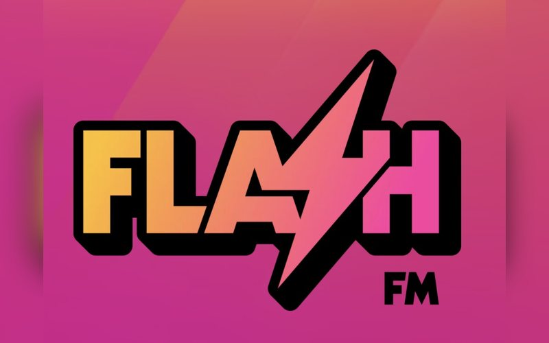
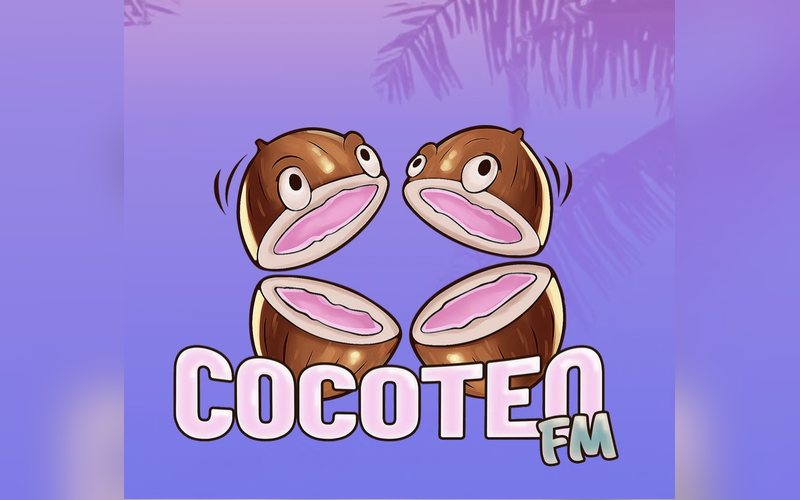
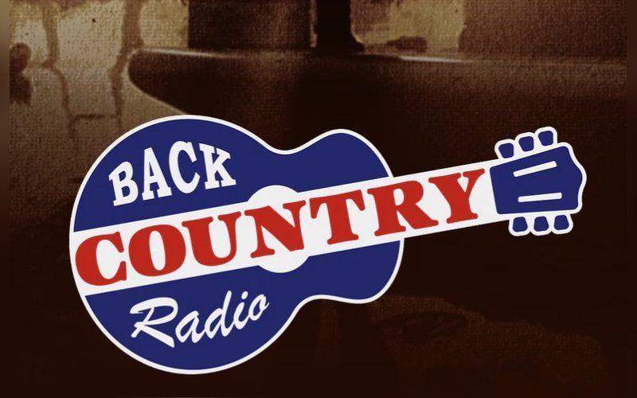
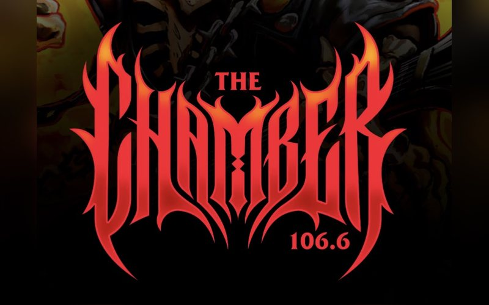
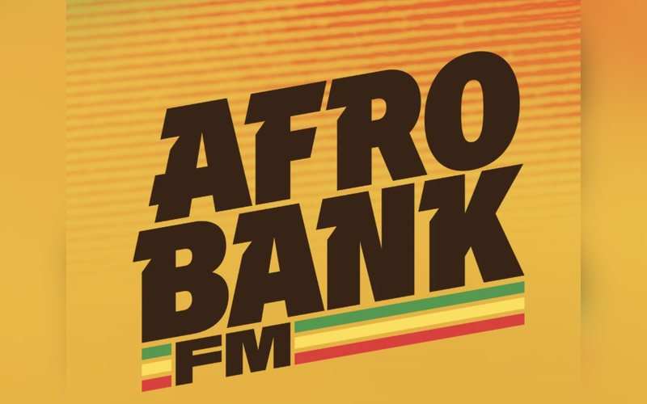
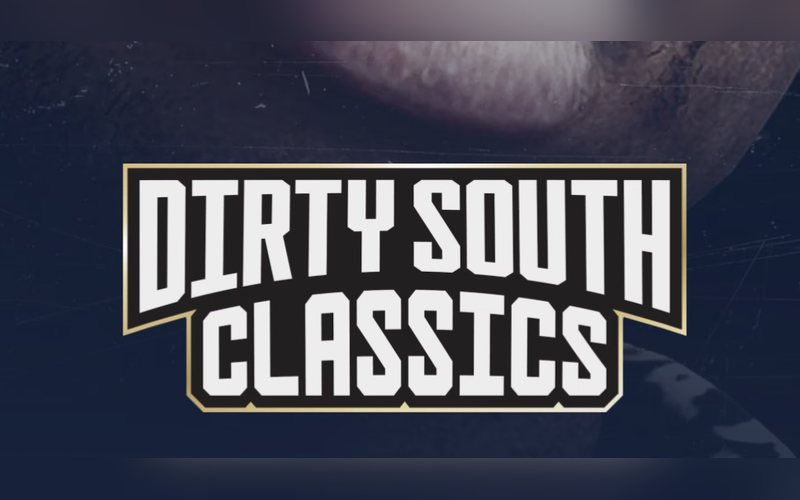
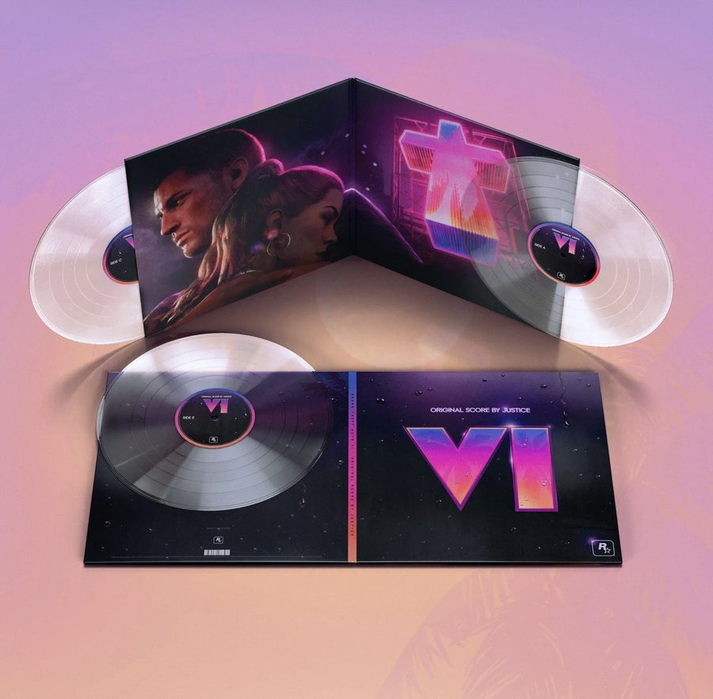
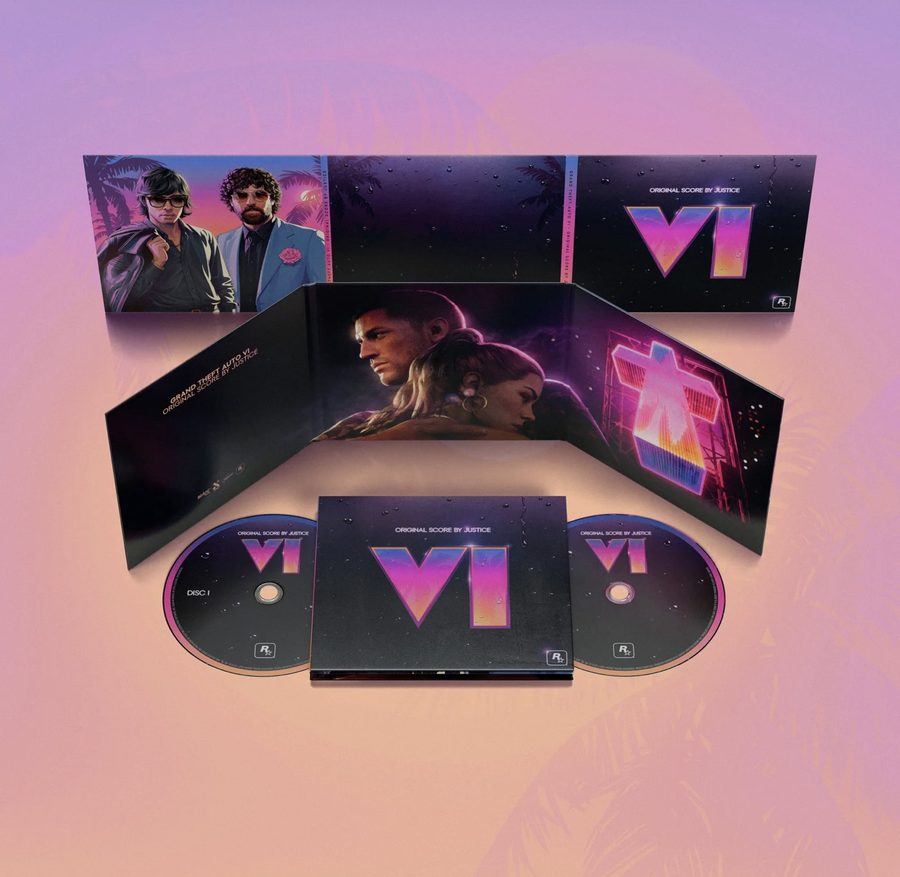

GTA 6: radios, canciones, The Album y Original Score
Actualizado: 26 de noviembre de 2026
Rockstar ya mostró seis emisoras de radio de GTA 6 con locutores famosos, como Bad Bunny, Lana Del Rey y Morgan Wallen. Además, ya está en streaming Grand Theft Auto VI: The Album, con 34 canciones originales y 23 más en la Deluxe Edition, y la banda sonora original del juego es obra del dúo francés Justice, que la lanza el 11 de diciembre.
Las radios confirmadas
Estas son las emisoras que Rockstar presentó el 8 de octubre en su web oficial. Es solo un adelanto: el juego tendrá más.

Flash FM
Pop
Locutores: Robyn y Alex Consani
Charli xcx, "Good Ones"
MGMT, "Electric Feel"
Zara Larsson y PinkPantheress, "Midnight Sun (Girls Trip)"

Cocoteo FM
Latino actual
Locutores: Bad Bunny (El Martillo) y RaiNao (La Gata)
Bad Bunny, "EoO"
Axel Rulay con Farruko y El Alfa, "Si Es Trucho Es Trucho (Remix)"
Romeo Santos y El Chaval de la Bachata, "Canalla"

Back Country Radio
Country clásico y outlaw
Locutores: Morgan Wallen, Lana Del Rey (Delta Dawne) y Jeremy Dufrene (Mud Dog Mike)
David Allan Coe, "Need a Little Time Off for Bad Behavior"
Loretta Lynn, "Don't Come Home A-Drinkin'"
Hank Williams Jr. y Waylon Jennings, "The Conversation"

The Chamber 106.6
Metal y hard rock
Locutores: Kerry King y Tom Araya, de Slayer
Black Sabbath, "I"
Pantera, "I'm Broken"
Slayer, "Raining Blood"

AfroBank FM
Afrobeats y amapiano
Locutores: Burna Boy y Palms Trax
Asake, "Joha"
Pat Thomas con Ebo Taylor, "Gye Wani"
DJ Lag y Robot Boii con Kamo Mphela, "Shay'sana"

Dirty South Classics
Rap y hip hop del sur
Locutores: Trick Daddy y Trina
David Banner con Lil' Flip, "Like A Pimp"
JT Money con Solé, "Who Dat"
DJ Khaled con Trick Daddy, Rick Ross y Pitbull, "Born N Raised"
Logos de las emisoras: Rockstar Games.
Novedad en la saga. Por primera vez la radio se puede escuchar caminando: Jason y Lucia la oyen en el teléfono con audífonos. También hay pódcast a la carta, a pie o en el auto.
Espacio publicitario
GTA VI: The Album
Ya salió, junto con el juego, y está en las plataformas de streaming. Lo lanzan Rockstar Games y Atlantic Records.
34 canciones originales hechas para GTA 6. Hay vinilo (normal y edición limitada) y CD.
La canción de Travis Scott la produjo Guy-Manuel de Homem-Christo, de Daft Punk.
Justice compuso la banda sonora original (el score) del juego y abre el álbum. Su sencillo "Flower in a Hurricane", con Tame Impala, SZA y King Gizzard & The Lizard Wizard, sonó en el tráiler de lanzamiento.
La lista que se filtró el 14 de noviembre, cuando una tienda vendió un vinilo antes de tiempo, era correcta: la oficial tiene los mismos artistas en el mismo orden.
La lista oficial de The Album (34 canciones)
#
Artista
Canción
1
Justice con Michael McDonald
Starting From Zero
2
Yung Lean con Future y Metro Boomin
That's It
3
Playboi Carti
AHH YEA
4
Travis Scott
RHYNO
5
CA7RIEL y Paco Amoroso, PinkPantheress, Fred again.. y Etienne de Crécy
Sexy Magic
6
Justice con Tame Impala, SZA y King Gizzard & The Lizard Wizard
Flower In A Hurricane
7
Dua Lipa
Go Easy
8
Morgan Wallen
Last Thing You Need
9
JHAYCO
X
10
Fuerza Regida
Suzuki
11
Rauw Alejandro
Macacoa 2000
12
A Boogie Wit da Hoodie con elkan
Dance With Me
13
Burna Boy
Bigger
14
Gunna
COUNT UP
15
Kodak Black y Don Toliver
Let's Rock
16
Young Thug
WAKIN UP FLEX
17
Tee Grizzley
IKYFL
18
Don Toliver
TF?
19
Cardi B
Don't Chart
20
JT
GMA
21
JENNIE
Power Trip
22
Tove Lo
Blood In Your Eyes
23
Zara Larsson
Fast Emotion
24
Camila Cabello
Sweet Like Candy
25
Fcukers
Only One
26
Arca
Sandunguea
27
Rina Sawayama
TRDWFE
28
Rose Gray
All Again
29
Lana Del Rey
Crazy For You
30
Kali Uchis y Helado Negro
Largate
31
Omar Apollo
NO ME BUSQUES
32
Keith Richards
Bright Lights, Big City
33
Jesse Johnson y DāM-FunK
Stone Kold Krazy Luuv
34
Stanley Clarke, Yussef Dayes y Robert Glasper
Overtown Lights
Mucho latino en el disco. Además de Rauw Alejandro y CA7RIEL y Paco Amoroso, están JHAYCO, Fuerza Regida, Arca, Kali Uchis con Helado Negro y Omar Apollo. El tema de Lana Del Rey es una canción suya que llevaba más de diez años sin publicar, según NME.
The Album (Deluxe Edition): 23 canciones más
Pocos días después del lanzamiento, Rockstar y Atlantic sacaron por sorpresa una Deluxe Edition en streaming con 23 canciones extra, así que el álbum completo llega a 57. La abre Travis Scott y trae cinco temas de Overmono, entre ellos "Welcome to Leonida". Florida se nota: Kodak Black, Denzel Curry y Pooh Shiesty son de allí.
#
Artista
Canción
35
Travis Scott
Burn This Shit Down
36
Slayyyter
internet $tar
37
The Dare
Interesting
38
Anitta
Touch & Go
39
Offset
I Just Came To Pop It
40
HXG, tana y Quavo
RCKSTRL!VING
41
21 Savage
Cookin
42
Pooh Shiesty
Got Dat
43
Young Nudy
Don Da Da
44
SoFaygo
CASHOUT
45
Real Dimez y Sexyy Red
Cooties (Remix)
46
Latto con Flo Milli
50 Bands
47
Kodak Black y Michaël Brun
Tèt Kale Bobis
48
Denzel Curry con 454
FLA Flow
49
NEIL FRANCES
You Move Me
50
CHRIS STASSY y KETTAMA
Don't Play Around
51
HEALTH
NIGHTMARE
52
Power Trip
Mutual Death Warrant
53
Overmono
Granforma
54
Overmono
Windsor Drop
55
Overmono
Eighty Eight Comet
56
Overmono
Banshee
57
Overmono
Welcome to Leonida
Vinilo
GTA VI: The Album en vinilo
Para coleccionistas: el disco oficial con las 34 canciones originales del juego.
Es la música original que suena en el juego durante las misiones y las persecuciones, aparte de las radios y de The Album. La compuso el dúo francés Justice.
Sale el 11 de diciembre de 2026, unas semanas después del juego.
30 temas, más temas extra en las versiones digitales.
Desde el 29 de octubre ya está en streaming "Pusher", con el DJ francés Gesaffelstein. También forma parte "Flower in a Hurricane", el tema del tráiler de lanzamiento.
Se puede reservar en CD doble y en vinilo triple, normal o en edición limitada transparente.
Formato
Precio en EE.UU.
Vinilo triple transparente (edición limitada)
$59.99
Vinilo triple negro
$54.99
CD doble
$21.99
Precios de la tienda Rough Trade. Pueden variar en otras tiendas.

Vinilo triple, edición transparente.

CD doble con estuche desplegable.
Imágenes: Rockstar Games.
GTA VI: The Festival (21 de noviembre, Miami)
Rockstar Games y PlayStation organizaron un festival de música en vivo para celebrar el lanzamiento, dos días después de la salida del juego. Fue un evento real, no dentro del juego, y ya se celebró.
Cuándo: sábado 21 de noviembre de 2026.
Dónde: Mana Wynwood, 318 NW 23rd St, Miami. Puedes verlo en el mapa de Miami real.
Cartel: Travis Scott (Cactus Jack presenta, con Don Toliver, Kodak Black y SoFaygo), Cardi B, Ca7riel y Paco Amoroso, Justice (DJ set), Metro Boomin, Nick León b2b DJ Python, Prospa b2b Skream, Rauw and Friends, Suero, Tainy y The Dare b2b Fcukers (DJ set).
Entradas: no se venden al público general. Hubo un sorteo gratuito en la web oficial del festival, abierto hasta el 10 de noviembre a las 4:00 p. m. hora de Miami, una inscripción por persona. Los ganadores reciben un código por SMS para comprar entradas el 11 de noviembre a las 12:00 p. m., por orden de llegada. Tener código no garantiza entrada.
Hay que tener 17 años o más.
Preguntas frecuentes
¿Todavía se pueden conseguir entradas para GTA VI: The Festival?
No. El festival fue el 21 de noviembre y las entradas solo se vendían con el código del sorteo oficial.
¿Bad Bunny sale en GTA 6?
Sí. Es locutor de Cocoteo FM, la emisora de música latina, con el nombre de El Martillo, y suena su canción "EoO".
¿Vuelven Flash FM o V-Rock?
Flash FM vuelve, ahora con pop actual. V-Rock no está entre las seis emisoras presentadas hasta ahora.
¿Cuándo sale el álbum de GTA 6?
Ya salió, junto con el juego, y está en streaming. Después llegó la Deluxe Edition con 23 canciones extra, 57 en total.
¿Qué trae la Deluxe Edition de GTA VI: The Album?
23 canciones nuevas de artistas como Travis Scott, 21 Savage, Offset, Anitta, Latto, Denzel Curry, Kodak Black y Overmono, que suman 57 con las 34 del álbum original.
¿Qué artistas salen en GTA VI: The Album?
Travis Scott, Dua Lipa, Playboi Carti, Morgan Wallen, Rauw Alejandro, Cardi B, JENNIE, Camila Cabello, Lana Del Rey, Fuerza Regida, JHAYCO, Justice y muchos más: la lista completa de 34 canciones está arriba.
¿Quién hace la música original de GTA 6?
El dúo electrónico Justice compuso la banda sonora original. Rockstar lo dio a conocer con el tráiler de lanzamiento.
¿Cuándo sale el Original Score de GTA 6?
El 11 de diciembre de 2026, en streaming, CD y vinilo. El tema "Pusher", con Gesaffelstein, ya se puede escuchar.
¿Qué diferencia hay entre The Album y el Original Score?
The Album trae 34 canciones de artistas como Travis Scott o Rauw Alejandro (57 con la Deluxe Edition) y ya está en streaming. El Original Score es la música instrumental del juego hecha por Justice y sale el 11 de diciembre.